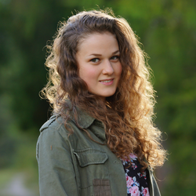

Nuestros escritores
Margaret E.
Escritor 001

Fred S.
Escritor 002

Sarah W.
Escritor 003
Te damos la bienvenida a UCB NEWSPAPER ¿Quieres saber más sobre nosotros? ¡Aquí va nuestra historia!
El periódico es uno de los medios masivos de comunicación más importante de la actualidad, especialmente en los últimos años que, con la asimilación de los soportes tecnointelógicos de internet ha sabido cosechar aún más seguidores.
Es innegable que el periódico es una de las formas de comunicación más importante que existe en la actualidad. Esto es así ya que la presencia de información de todo tipo los hace a los medios de comunicación acreedores de la posibilidad de difundir las informaciones o datos que más convenientes crean, sin que esto necesariamente implique que se falte a la verdad. Los periódicos son además una de las formas más accesibles que tiene la mayor parte de la sociedad de acceder a esa información que de otra manera sólo sería manejada por funcionarios políticos o intelectuales.
Un periódico digital o periódico en línea (o noticias electrónicas o publicación de noticias electrónicas) es la versión en línea de un periódico, ya sea como una publicación independiente o como la versión en línea de una publicación periódica impresa.
Estar en línea creó más oportunidades para los periódicos, como competir con el periodismo de transmisión en la presentación de noticias de última hora de una manera más oportuna. Muchos en la industria periodística también consideran que la credibilidad y el fuerte reconocimiento de marca de los periódicos bien establecidos, y las estrechas relaciones que tienen con los anunciantes, fortalecen sus posibilidades de supervivencia. El alejamiento del proceso de impresión también puede ayudar a reducir los costos.
Escritor 001
Escritor 002
Escritor 003